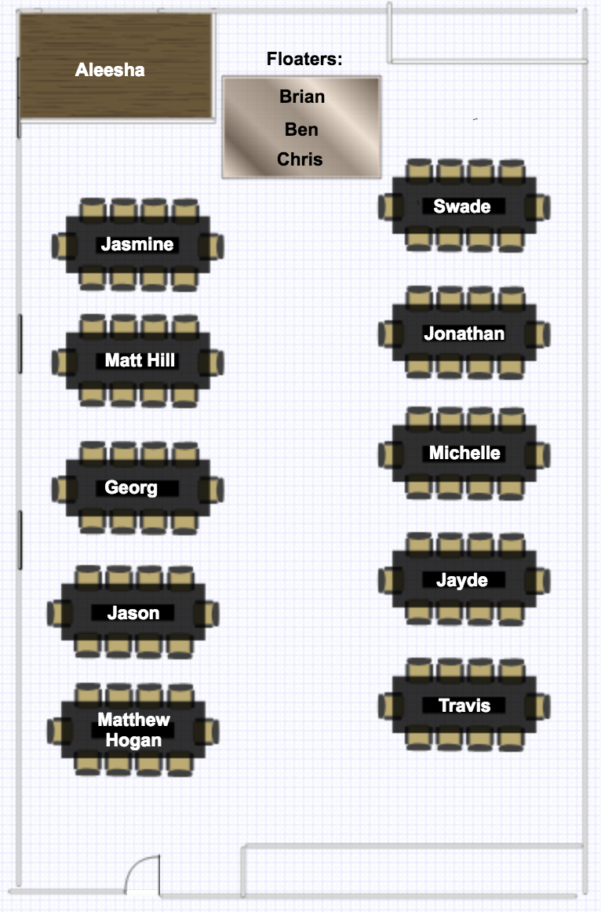

class: center, middle # Unit 1 ## Fundamentals of Programming --- class: center <div id="seating-chart">  </div> --- class: center, middle # [Studio Solution](https://runestone.launchcode.org/runestone/static/thinkcspy/Studios/holiday.html) --- class: center, middle # Chapter 4 Lecture --- ### Topics - Modules - Loops --- ### Loops You can write loops using a: - `list` ``` # Input for num in [1,2,3,4]: print(num) ``` ``` # Output 1 2 3 4 ``` --- ### Loops You can write loops using a: - `list` ``` # Input for num in range(4): print(num) ``` ``` # Output 0 1 2 3 ``` --- ### Loops You can write loops using a: - variable of type `list` ``` # Input names = ["Aleesha", "Nick"] for name in names: print("Hello, " + name + "!") ``` ``` # Output Hello, Aleesha! Hello, Nick! ``` --- ### Chapter 4 Exercises - [Chapter 4](https://runestone.launchcode.org/runestone/static/thinkcspy/PythonTurtle/Exercises.html) - 6 - 10 - 12 --- ### Chapter 4 Assignment Clarification None, but let's go over Vocareum now. --- class: middle, center ## What is [Vocareum](https://learn.launchcode.org/courses/139/assignments/6853)? <br /> ###### And why does it hate user input? --- class: center, middle # Q&A --- class: center, middle ## Studio Walkthrough ### [Turtle Racing](https://runestone.launchcode.org/runestone/static/thinkcspy/Studios/turtle-racing.html) --- class: center, middle # [Find your TA](https://learn.launchcode.org/courses/144/users)